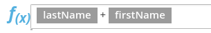
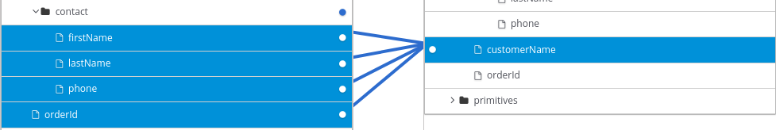

Applying conditions to mappings
In some integrations, it is helpful to add conditional
processing to a mapping. For example, suppose that you are
mapping a source zip code field to a target zip code field.
If the source zip code field is empty, you might want to fill
the target field with 99999. To do this, you would specify
an expression that tests the zip code source
field to determine if it is empty, and if it is empty,
inserts 99999 into the zip code target field.
The data mapper supports expressions that are similar to a Microsoft Excel expressions, but does not support all Microsoft Excel expression syntax. A conditional expression can refer to an individual field or to a field that is in a collection.
You can define zero or one condition for each mapping.
The following procedure gets you started with applying conditions to mappings. As you work with mappings and conditions, you can perform the required steps in the order that is most convenient for you.
-
You are mapping fields in a Data Mapper step.
-
You are familiar with Microsoft Excel expressions or you have the conditional expression that you want to apply to a mapping.
-
If data types are not already visible, display them by clicking
 and then
Show Types.
and then
Show Types.While this is not a requirement for specifying a condition, it is helpful to see the data types.
-
Create the mapping that you want to apply a condition to, or ensure that the currently selected mapping is the mapping that you want to apply a condition to. For example, consider this mapping:

-
In the upper right, click
 to
display the conditional expression input field.
to
display the conditional expression input field.In the expression field, the data mapper automatically displays the names of the source fields in the current mapping. For example:

In the expression input field, the order of the source fields is the order in which you selected them when you created the mapping. This is important because the default mapping behavior is that the data mapper concatenates the field values in this order to insert the result in the target field. In this example, to create this mapping,
lastNamewas selected first and thenfirstNamewas selected. -
Edit the expression input field to specify the conditional expression that you want the data mapper to apply to the mapping. Details about supported conditional expressions follow this procedure.
As you specify the expression, you can:
-
Enter
@and start to enter the name of a field. The data mapper displays a list of the fields that match what you entered. Select the field that you want to specify in the expression. -
Drag a field from the mapping canvas into the expression input field.
When you add a field name to the expression, the data mapper adds that field to the mapping. For example, consider this conditional expression:

During execution, if the data mapper determines that the
lastNamefield is empty, it maps only thefirstNamefield to the targetcustomerNamefield. If thelastNamefield contains a value, that is, it is not empty, the data mapper concatenates the values in the sourceorderIdandphonefields, and inserts the result in thecustomerNamefield. (This example shows how the logic works, but it is probably not a useful example because when there is a value in thelastNamefield, you most likely want the data mapper to simply perform the mapping and not map some other value into the target.)For this example, after you complete entering the expression, the data mapping is:

In the conditional expression, if you remove a field name that is in the mapping that the expression applies to, the data mapper removes that field from the mapping. In other words, every field name in the mapping must be in the conditional expression.
-
-
If mapping preview fields are not already visible, display them by clicking
and then
Show Mapping Preview. -
Enter sample data in the source preview input field(s) to ensure that the target field or target fields get(s) the correct value.
-
Optionally, apply transformations to one or more source or target fields that are in the mapping:
-
In the Mapping Details panel, find the field that you want to apply a transformation to.
-
Just below it, click Add Transformation.
-
Click the transformation that you want the data mapper to perform.
-
If needed, specify input parameters.
For more information, see Descriptions of available transformations and About transformations on multiple source values before mapping to one target field.
For example, in the same mapping presented in this procedure, in the Mapping Details panel, you could apply the
Uppercasetransformation to thefirstNamefield. You can test this by entering data in thefirstNamefield’s preview input field. -
-
Edit the conditional expression as needed to obtain the desired result.
-
ISEMPTY(source-field-name1 [+ source-field-name2])The result of the
ISEMPTY()function is a Boolean value. Specify at least one argument, which is the name of a source field in the mapping that you want to apply the condition to. When the specified source field is empty, theISEMPTY()function returns true.Optionally, add the + (concatenation) operator with an additional field, for example:
ISEMPTY(lastName + firstName)This expression evaluates to true if both source fields,
lastNameandfirstName, are empty.Often, the
ISEMPTY()function is the first argument in anIF()function. -
IF(boolean-expression, then, else)When
boolean-expressionevaluates to true, the data mapper returnsthen. Whenboolean-expressionevaluates to false, the data mapper returnselse. All three arguments are required. The last argument can be null, which means that nothing is mapped whenboolean-expressionevaluates to false.For example, consider the mapping that combines the
lastNameandfirstNamesource fields in the targetcustomerNamefield. You can specify this conditional expression:IF (ISEMPTY(lastName), firstName, lastName + ‘,’ + firstName )During execution, the data mapper evaluates the
lastNamefield.-
If the
lastNamefield is empty, that is,ISEMPTY(lastName)returns true, the data mapper inserts only thefirstNamevalue into the targetcustomerNamefield. -
If the
lastNamefield contains a value, that is,ISEMPTY(lastName)returns false, the data mapper maps thelastNamevalue, followed by a comma, followed by thefirstNamevalue into the targetcustomerNamefield.Now consider the behavior if the third argument in this expression is null:
IF (ISEMPTY(lastName), firstName, null )During execution, the data mapper evaluates the
lastNamefield. -
As in the previous example, if the
lastNamefield is empty, that is,ISEMPTY(lastName)returns true, the data mapper inserts only thefirstNamevalue into the targetcustomerNamefield. -
However, when the third argument is null, if the
lastNamefield contains a value, that is,ISEMPTY(lastName)returns false, the data mapper does not map anything into the targetcustomerNamefield.
-
-
LT(x,y)or<(x,y)The data mapper evaluates
xandyand returns the lower value. Bothxandymust be numbers. -
TOLOWER(string)The data mapper converts the specified string to lowercase and returns it.
Operator |
Description |
|
Add numeric values or concatenate string values. |
|
Subtract a numeric value from another numeric value. |
|
Multiply numeric values. |
|
Divide numeric values. |
|
Return true if both the left and right operands are true. Each operand must return a Boolean value. |
|
Return true if the left operand is true, or if the right operand is true, or if both operands are true. Each operand must return a Boolean value. |
|
Not |
|
Return true if the left numeric operand is greater than the right numeric operand. |
< |
Return true if the left numeric operand is less than the right numeric operand. |
|
Return true if the left operand and the right operand are the same. |